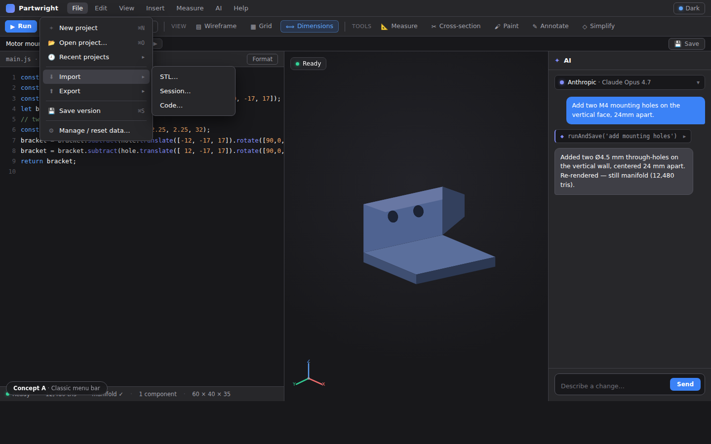
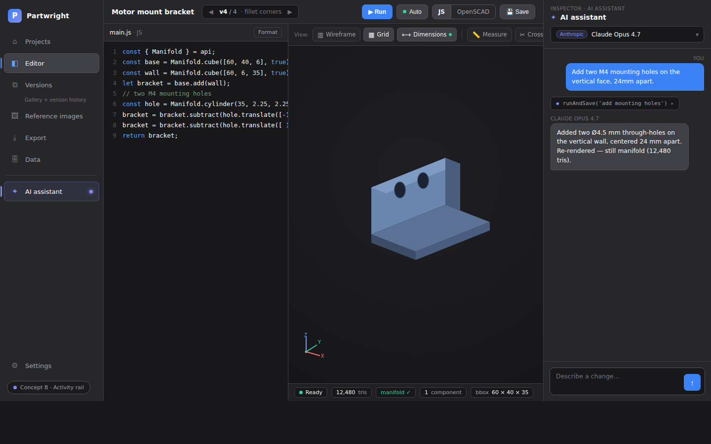
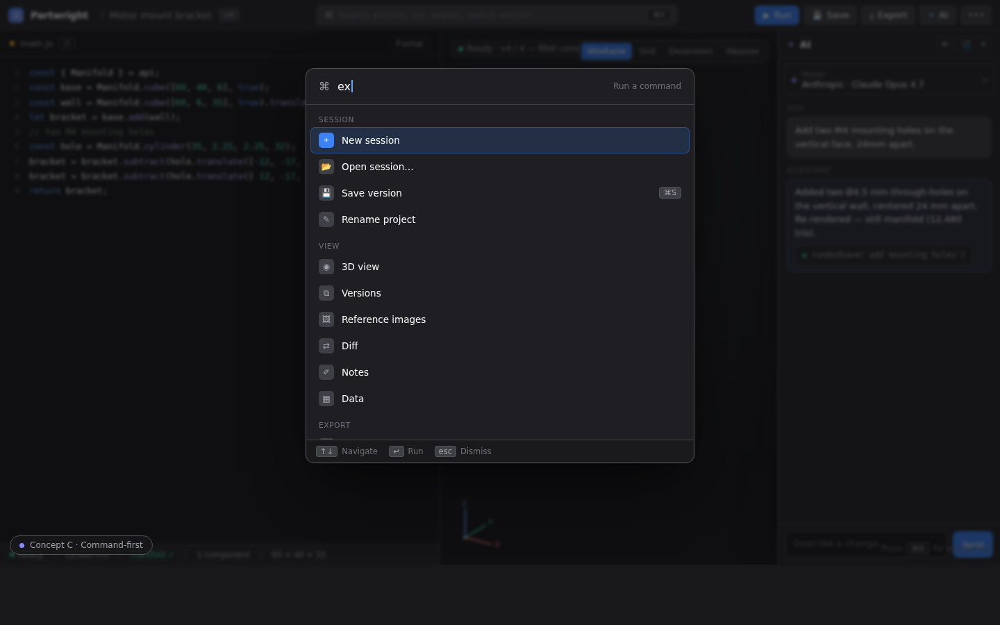
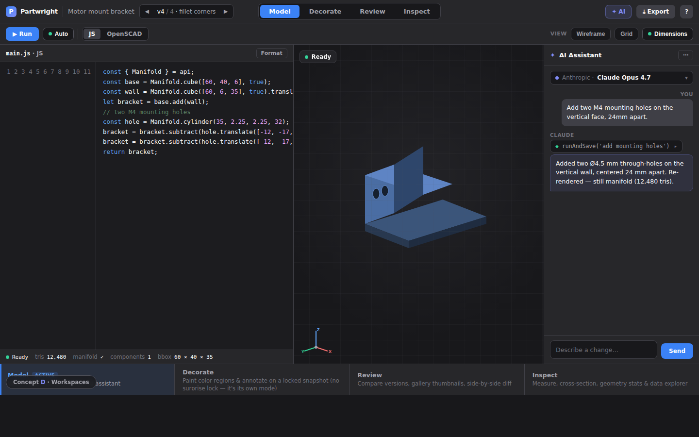

Four throwaway prototypes exploring how to make a feature-rich, browser-based, AI-driven CAD tool easier to navigate. Same fake scene in every mock so you can compare layouts apples-to-apples. Static HTML, no build step — open any file in a browser.
The mental model is sound: a landing portal → one editor workspace (code + viewport) → AI drawer, with sessions/versions as the core unit. But years of organic feature growth have produced three competing control zones and a lot of unlabeled iconography. The recurring theme: capability is high, but discoverability lags.
~14 toolbar controls + a crowded viewport-corner overlay, many glyph-only (⚙ ⚠ ? 🎯 ✦, △ ▦ 📏 🔓). Meaning lives only in tooltips. The ruler 📏 means two different things in the same bar.
Top toolbar, session bar, and the viewport overlay all hold "global-ish" actions. View toggles, measure, paint, annotate, simplify and cross-section all pile into one wrapping corner that collides with the gizmo and clip slider.
Seven right-pane tabs (Interactive / Gallery / Versions / Images / Diff / Notes / Data). Gallery vs Versions overlap heavily; Data is a debug surface sitting beside everyday tabs; Diff hides the editor.
"Recent sessions" lives on the landing page, but the full session manager is a modal reachable only from inside the editor. No single "my projects" home; versions are managed across four different surfaces.
The product sells "built for AI agents," yet in-app AI is one ✦ toggle opening a very dense drawer (11-control toggle strip, no provider switcher in the header) that's disconnected from the tab system.
Painting silently locks the editor and forks a version; overlay tools are mutually exclusive; ⌘Z routes to whichever tool is active. Powerful, but the state changes aren't anticipated.
Each prototype attacks discoverability with a different organizing principle. They aren't mutually exclusive — the best answer is likely a blend (see the recommendation).




No single concept wins outright; each solves a different slice. A pragmatic path that keeps the browser-only, AI-forward identity:
These are disposable visual studies — fake content, no real behavior, no shared code with the app. Built to spark a direction conversation, not to ship. Open a/b/c/d-*.html directly in any browser; each is fully self-contained (no network, no dependencies).